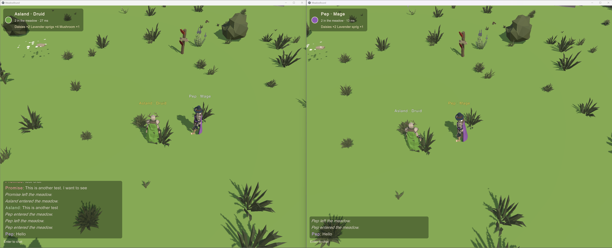
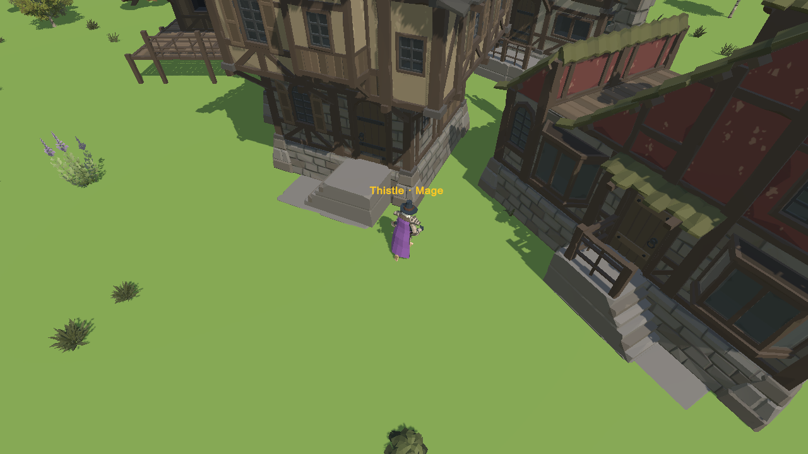
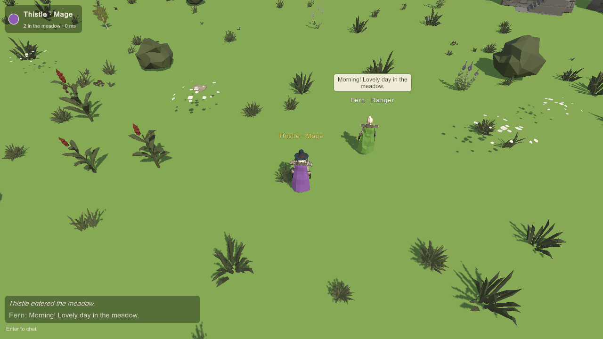
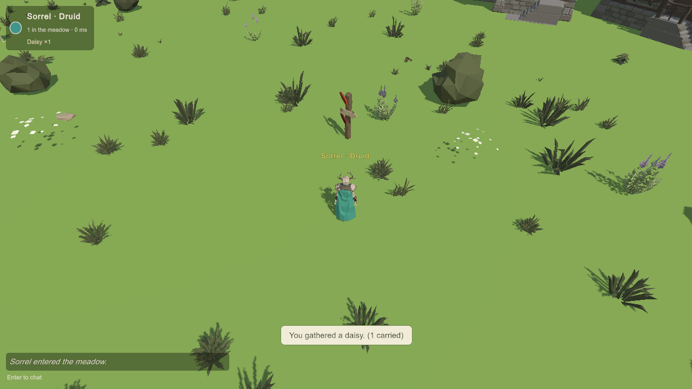
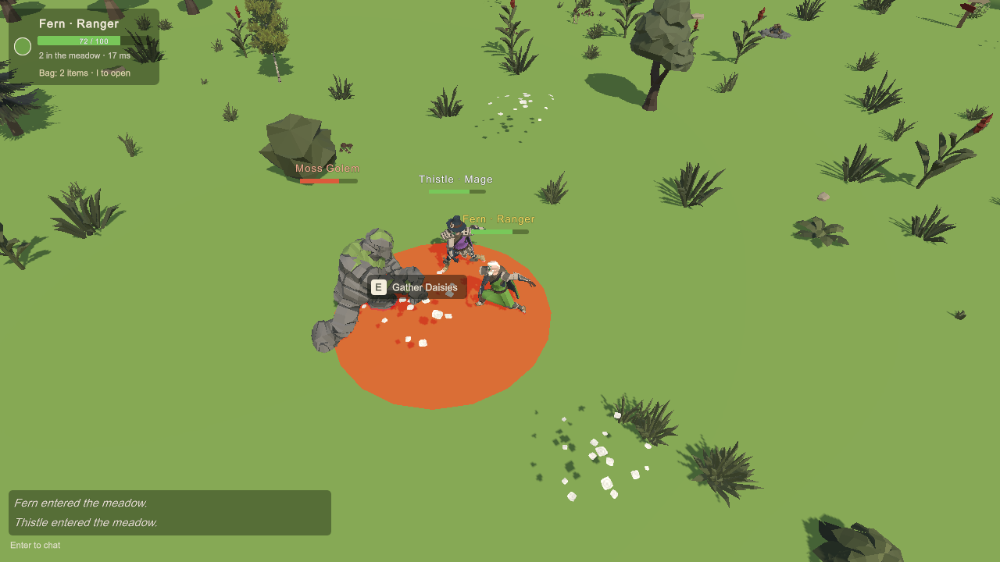

Yesterday’s release (v0.1.4) was all plumbing: SQLite storage, invite-only accounts, login lockout. Important, invisible. v0.1.5, live on the homelab server this morning, is the opposite — you can see every bit of it.
Two clients, one server, same meadow — and for the first time there are things in it:
- The hamlet. A small cluster of cottages near spawn (Synty’s Fantasy Kingdom set, if you’re counting), so the world has a “where” now, not just a field. Collision included — you can no longer walk through houses, which sounds basic until you’ve shipped the version where you could.
- Chat, properly. Player chat over the game’s own networking, speech bubbles over heads, nameplates with class, and server-stamped join/leave lines (“Thistle entered the meadow”). There’s also light cleaning and a rate limit, because we plan ahead around here.
- Gathering with a memory. Daisies, lavender, mushrooms — press E, and it goes in your bag (the HUD keeps count), and the bag is saved in the database, so your flowers survive a logout. Small system, big deal: it’s the seed the loot and crafting systems grow from.
- Presence. The corner panel shows who’s here and your ping — “2 in the meadow · 27 ms.” Tiny line. Makes the world feel inhabited.


The deploy ran the usual gauntlet — checksum-verified build, a full backup of the v0.1.4 database first, schema migration 2 (the new inventory table) applied cleanly, snapshot written, and the same 2 accounts and 3 characters waiting on the other side. If you’re keeping score at home: the v0.1.4 client gets politely refused by the version handshake now; the new client is the one in the release.
What’s next
What’s next (work in progress, not in the live build): crafting — a table, recipes with have/need counts, the first craftables (a lavender sachet and a flower crown are already wearable in testing) — and our first hunt: the Moss Golem, a big meadow guardian with a telegraphed slam you step out of, or else. Gather, craft, hunt together, bring the materials home.
